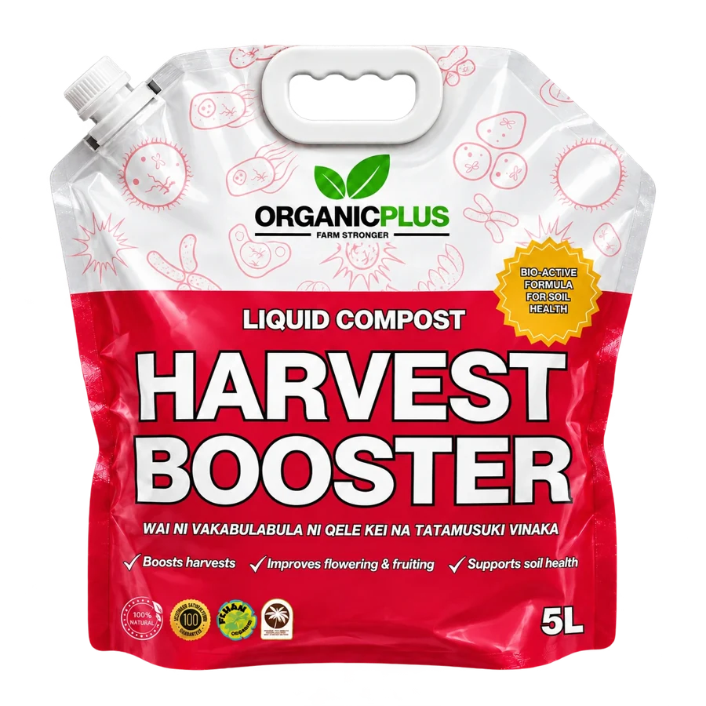
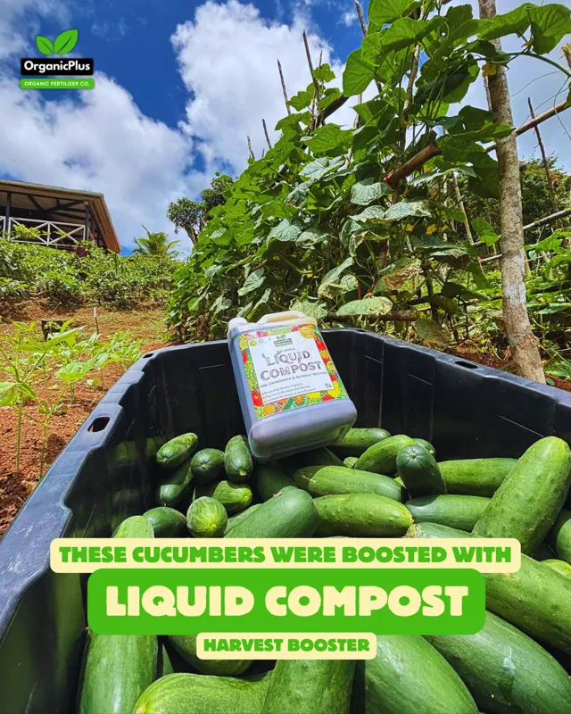
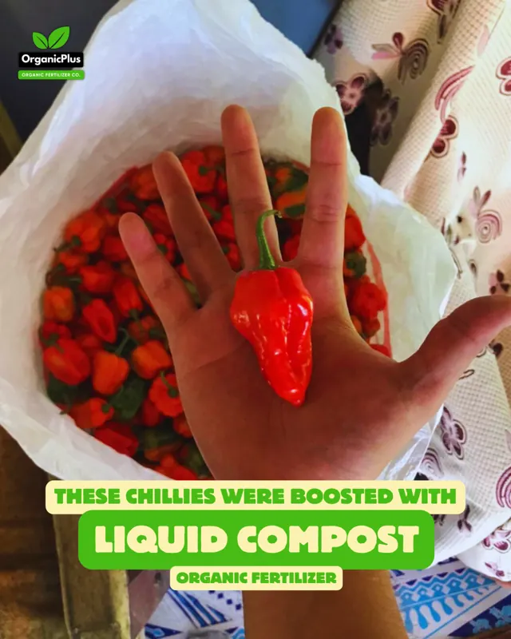
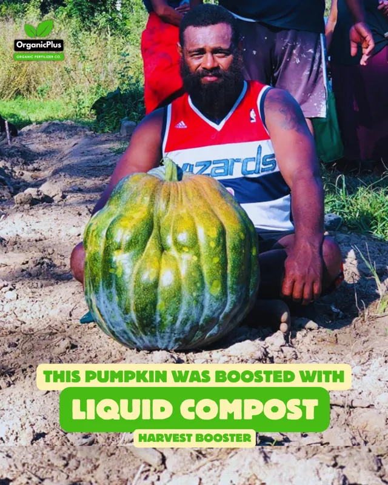

Start at first flowers.
When the first flowers appear, add Harvest Booster to your crop routine.
FIRST FLOWERS? HARVEST BOOSTER.
Give your flowering and fruiting crops an extra boost — alongside your usual fertiliser or manure.
Harvest Booster by OrganicPlus · Formerly Liquid Compost

THIS IS THE PACK TO LOOK FOR IN STORE.
Start at first flowersFor flowering & fruiting crops
Repeat every 7 daysMake it part of your routine
Until harvesting finishesKeep your usual fertiliser or manure
FROM OUR FARMING COMMUNITY
Real experiences with OrganicPlus Liquid Compost — the product now called Harvest Booster.
“I am witness to the positive impacts of Liquid Compost. The number of fruits per branch is amazing! This has allowed me to expand my farm to a commercial scale.”
Saiasi’s experience, shared under our former product name. Individual farm results vary.
Harvest Booster supports flowering, fruiting and soil health. Add it to your normal fertiliser or manure programme as flowers appear.
READY FOR YOUR NEXT HARVEST?
Look for the red-and-white Harvest Booster pack at your OrganicPlus stockist.
Call ahead to confirm stock and pack sizes before travelling. During the changeover, some stores may still carry Liquid Compost packaging.
Search your town, village or store name.
BETTER FARMING MADE SIMPLE.
For flowering and fruiting crops. Keep using your normal fertiliser or manure alongside Harvest Booster.
When the first flowers appear, add Harvest Booster to your crop routine.
Mix with water at the rate on your pack. Apply as directed, then repeat weekly.
Continue every 7 days until harvesting finishes.
Follow your pack’s dilution and application directions. For root crops, ginger, yaqona or a different growth stage, ask OrganicPlus for the programme for your crop.
MORE FROM FIJI FARMS



These are existing farmer photographs and may show our previous Liquid Compost packaging.
LET’S KEEP IT SIMPLE
FIRST FLOWERS? HARVEST BOOSTER.